Electrical Engineering / embedded systems + PCB design
I build embedded hardware end to end. Schematic capture and board layout in KiCad,
firmware in ESP-IDF, and the mechanical parts in Fusion 360 and on my own 3D printer.
Right now: a custom ESP32 development board that passed ERC and DRC and is waiting on a
fab order, and PLC ladder logic in CodeSys. I'm looking for a hardware, PCB, or embedded
internship.
Hardware I designed, built, and debugged myself. Each one lists what it is, what broke,
and what I changed.
ESP32 Development Board
Fab order pending
Custom PCB / KiCad | schematic to routed layout
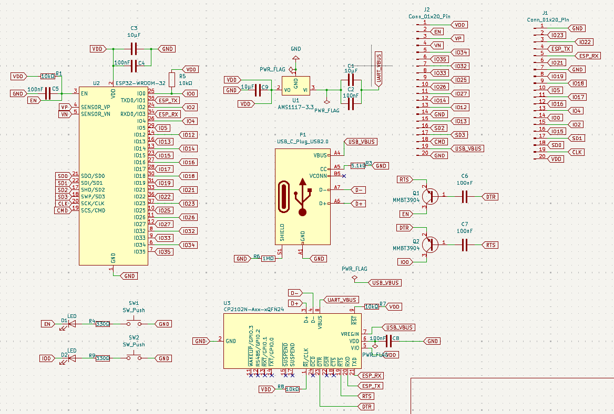
SchematicSix revisions. Labelled nets after the fourth.
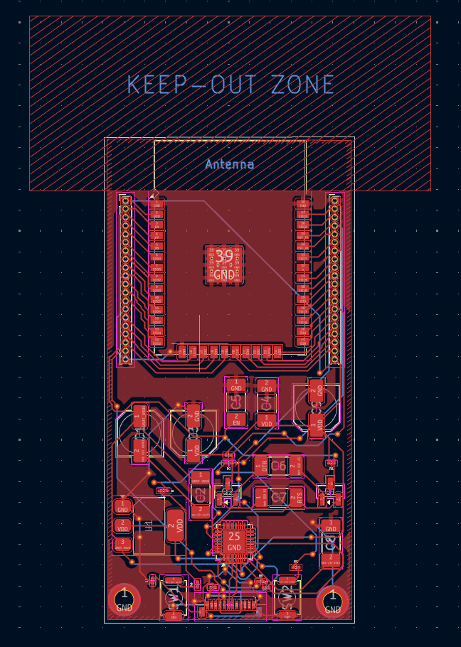
LayoutGround pour, stitched thermal pad, antenna keep-out off the board edge.
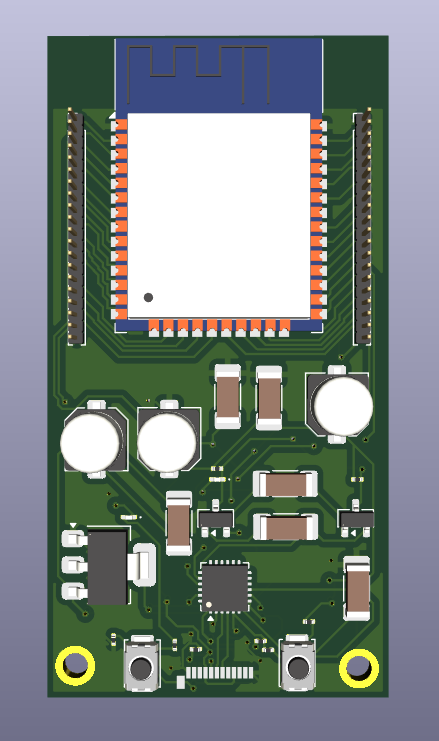
3D renderERC and DRC clean. Next step is the fab order.
An ESP32-WROOM-32 development board designed from a blank schematic to a routed layout.
USB-C input with CC pull-down resistors so the port enumerates on a PD supply, an
AMS1117-3.3 regulator for the 3V3 rail, and a CP2102N USB-UART bridge with an
auto-reset circuit built from two MMBT3904 transistors. So DTR and RTS drive
EN and IO0 and the board flashes straight from the IDE with no jumper and no external
programmer. Two 20-pin headers break out the remaining GPIO.
I learned KiCad on an adjustable LM317 bench supply before this, three
protection diodes and a pot, which is roughly the complexity step from that board
to this one.
It took four schematic revisions to get here. I had bypass capacitors placed too far from
the module's power pins, wrong pull-up values, and a TX/RX crossover that would have made
the board unprogrammable. All caught by reading the datasheets against my own
schematic instead of trusting a reference design. The antenna keep-out extends past the
board edge, the module's ground pad is stitched through to the pour, and ERC and DRC are
clean. Next step is the JLCPCB order and bring-up.
Embedded firmware / ESP32 | breadboard to 3D printed enclosure
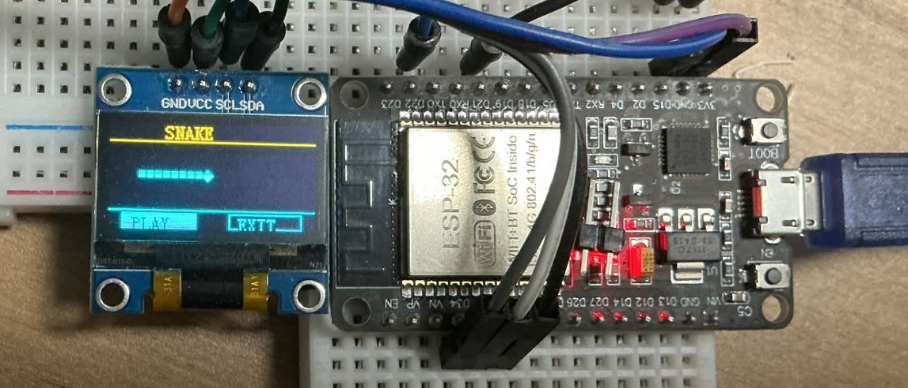
PrototypeESP32 and I²C OLED on a breadboard. Snake running.
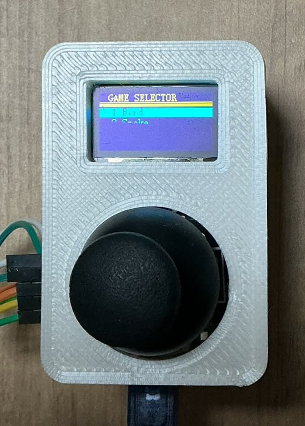
FinishedSoldered, in a printed enclosure, on the game selector.
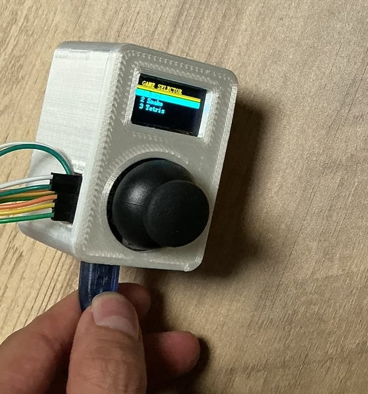
In handCable exits the side, because routing it internally made the body too thick to pocket.
A handheld console running three games I wrote from scratch. Flappy Bird, Snake, and
Tetris. I built it on ESP-IDF rather than the Arduino framework on purpose: it forced
me to learn the real toolchain (CMake/Ninja, component structure, menuconfig, the
idf.py flash/monitor loop) instead of dropping in libraries I didn't understand.
The firmware side taught me more than I expected. Fixed-step game timing so speed
doesn't depend on frame rate, gravity and collision logic, sprite and background drawing,
and input debouncing that survives fast repeated presses.
The enclosure came out of testing it. The joystick breakout has solder tails on the back
that dug into my hand every time I picked it up, so I printed a cover for it before the
console body existed. The body followed the same logic: the USB cable leaves through the
side because routing it internally added enough thickness to make it awkward in a pocket.
In the pitBetween matches at a FIRST in Texas event.
One season, one problem, three robots. The game asked us to collect smooth rectangular
samples and score them, then hang the robot in the last thirty seconds. Every redesign came
from a specific failure on the field.
Gen 1 couldn't physically reach into the sample area. Gen 2 added a second,
deliberately thinner claw below the main one, sized to slip into the area without
disturbing the samples around the target, mounted on a linear extension, the reach
was still short and the extension flexed under its own length. The final robot
replaced it with a slide of the same type we used for hanging, which was stiff enough to
carry the reach, and added a triangular truss so the arm stopped bending and jamming at
full extension. The truss was my design.
The grip was a separate problem. The samples were smooth enough that they slipped out of
the claw mid-cycle, and a slip cost 5-10 seconds to recover on a cycle that
ran 7-11 seconds. A dropped sample roughly doubled what that cycle cost
us. Thickening the jaws didn't fix it, so I moved to casting two-part RTV silicone
grip tips in a mold I designed.
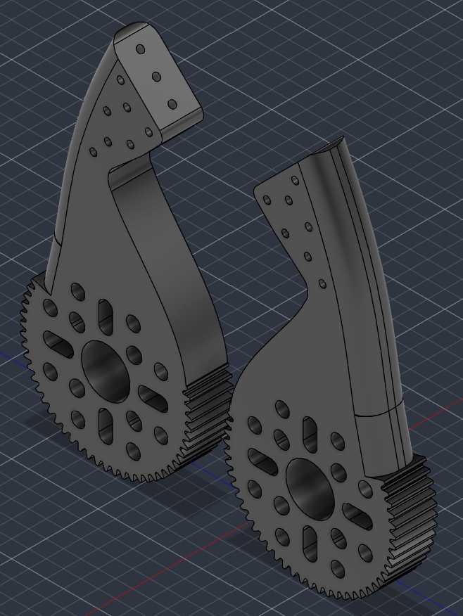
Small holesToo fine for the silicone to flow through. The tip pulled straight back out.
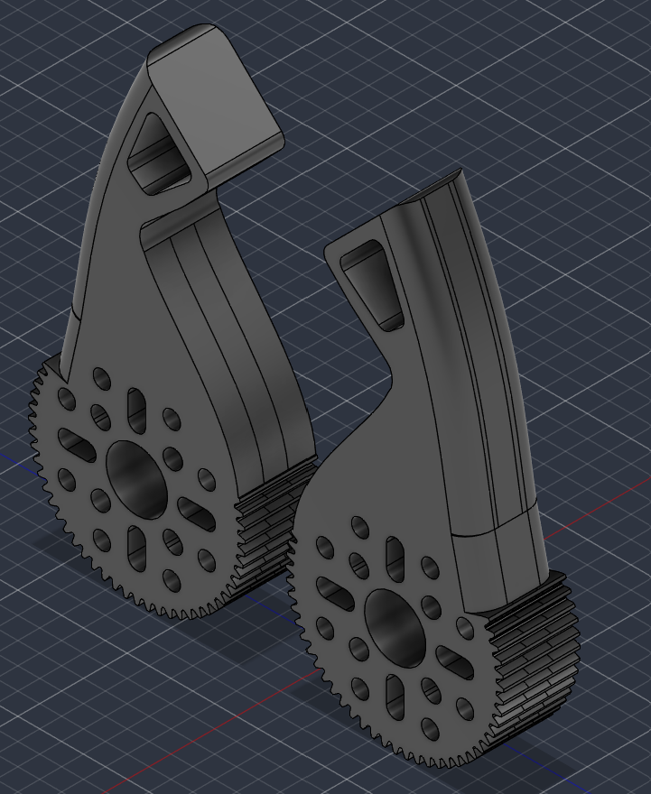
One large holeSilicone flows through and locks mechanically. This one held.
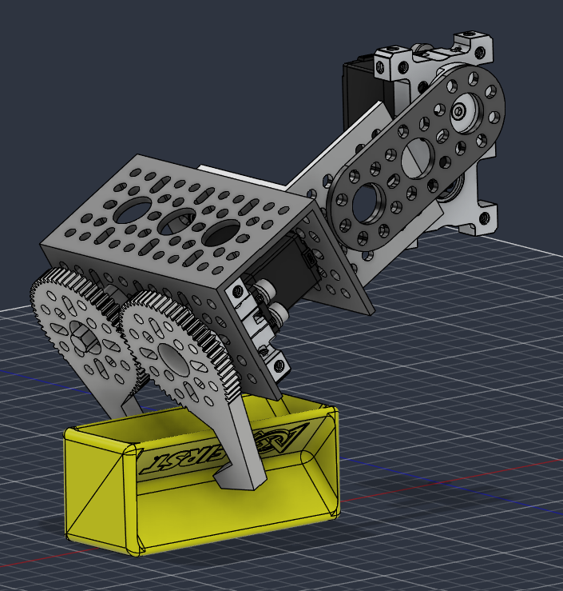
Scale checkBottom claw modelled around the sample to size the jaw opening.
Anchoring took three tries. The first jaw had a grid of small holes meant to key the
silicone in place, the holes were too fine for the material to flow through, so the tip
peeled off under load. The version that worked replaced them with a single large
through-hole at the tip, enough for the cast silicone to pass through and lock
mechanically rather than relying on adhesion. Over the rest of the season one tip came off
once, and I replaced another when it lost tack before the final event.
The material choices ran in both directions on purpose. Silicone doesn't bond to
PETG, so the mold is printed in PETG and the cast part releases cleanly, and
that same property is why I reprinted the claw itself in PLA. I needed the tip to
stay stuck to one part and let go of the other, so the two had to be different materials.
Fixing the grip then caused a second failure. Claws sticky enough to hold a sample also
stuck to the field floor, not enough to stop the robot, but enough to break bottom
claws and several servos. A teammate redesigned the bottom claw geometry off that finding,
we bench-tested it and it held samples without any silicone at all, so I never cut a second
mold for it. The right answer there was to stop adding material and change the shape.
After the grip fix we averaged about 12 samples per match and peaked at 17.
What was mine: I built the physical robot and rebuilt it in Fusion 360, reprinted the
claw in PETG after the original material kept cracking in service, proposed and
designed the triangular support structure, and designed and molded the grip tips. The
robots were a team effort, those pieces were mine.
Systems engineering / UAH InSPIRESS | Chief Engineer, 11-person team
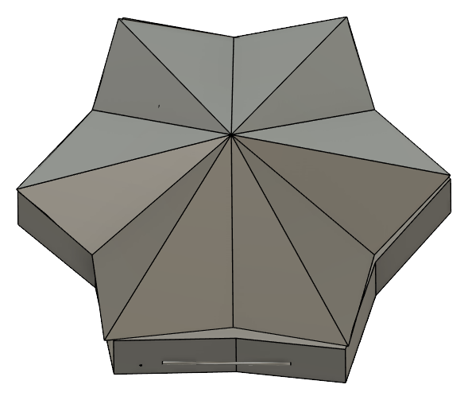
CitlaliFolding star form for the orbital path. Selected.
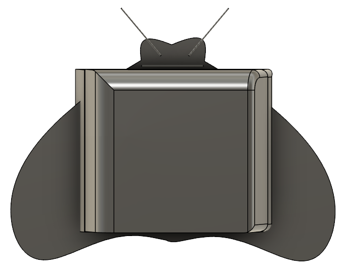
PapalotlWinged body. Scored lowest on science mass ratio. Cut.
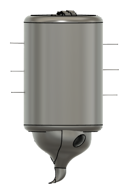
AlebrijeCylinder that sinks into the lake. Selected.
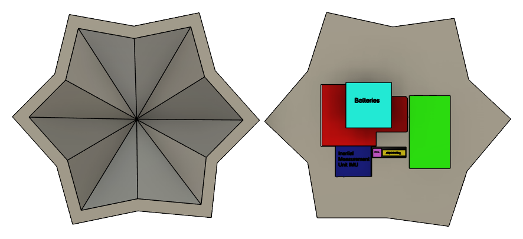
Instrument packingEvery instrument placed inside the envelope and mass budget.
UAH and NASA set high school teams the problem of designing an autonomous science payload
for a Titan mission. The constraints were real and hard: fit inside 44 × 24 ×
28 cm, stay under 10 kg, and survive −179 °C at
1.5 bar in 1.352 m/s² of gravity. Everything below was driven by those
four numbers.
I was Chief Engineer. What I actually did was set the mission architecture and defend it:
I pushed for two separate exploration paths. One staying with the orbiter,
one sinking into Ligeia Mare. When most of the team thought a single payload was
all we could manage. I chose the instrument set against the science objective, and I
reviewed the design and analysis work the rest of the team produced rather than producing
it myself. Three concepts were scored in a weighted trade study, two were selected and
merged so each exploration path had a payload suited to it.
Selections were made on weighted figures of merit, not preference. The science objective
came out as Life Supporting Elements (216 against 210 and 81). The shell material came out
as Ti-6Al-4V (Grade 5) over two alternatives (126 against 114 and 72), scored mostly
on density and durability. The payload carries a mass spectrometer, hyperspectral imager,
thermocouples and an IMU, with the imager placed at an unobstructed aperture because the
traceability matrix required a clear view.
Final mass budget by function, against a 10 kg limit.
Function
Components
Mass (kg)
Deploy
Parachute
0.14
Measure
1 HSI, 2 mass spectrometers, 2 thermocouples, 2 IMUs
2.98
Collect data
2 on-board computers
0.11
Provide power
2 batteries
0.90
Send data
2 transceivers, 2 antennas
0.82
House payload
Both payload shells
3.27
Total
Limit: 10.00
8.23
The analysis ran in four stages. Orbital velocity at the deployment altitude worked out to
1584 m/s. The payload leaves the deployment tube at 18.4 m/s under
285 m/s². The descent settles to 2.2 m/s vertical, dropping to
0.77 m/s terminal under the parachute at 2.51 g of load. At the lake we
checked buoyancy rather than assuming: 10.8 N of weight against 1.32 N of
buoyant force in a methane lake of 450-600 kg/m³, so the payload sinks as the
mission requires.
What was mine: the two-path mission architecture, the instrument selection, and
review of the team's design and calculations. The CAD was the design team's and the
numbers were the data analysts'. My job was deciding what to build and checking that what
came back held up. The team took first place in Outreach at the UAH competition.
A sensor-triggered gate that detects an approaching vehicle and raises a barrier arm.
I designed and printed the mechanical half myself. The breadboard mount and the pivoting
gate arm, which is where the real problem was.
The first prints didn't fit. Printed dimensions came out under nominal because of the
printer's own tolerance, so the pivot bound and the mount wouldn't seat. I measured the
error, adjusted the clearances in CAD, and reprinted until the fit was right. That
print-measure-adjust loop is the part I'd point to in an interview, not the sensor code.
A traffic light sequence written in Ladder Diagram in CodeSys, structured as an
explicit state machine rather than a chain of timers. Each phase owns a latched step bit
set and reset with S/R coils, a TON holds the phase for its interval, and the
lamp coils are driven from the step bits alone, so an output can never disagree with the
state the program thinks it's in. The amber flash is counted by a CTU rather than
timed, which makes the flash count one value to change instead of a rewrite.
Part of a self-directed curriculum I'm working through alongside coursework, after
MATLAB/Simulink and RC/RLC analysis. I picked ladder logic because it's how control
systems are actually written on a plant floor, and almost nobody learns it in the first
two years of an EE degree. The full cycle runs in simulation. The next revision adds a stop
input that clears every step bit, because a sequence you can't halt isn't a controller.
Stack / CodeSys · Ladder Diagram · IEC 61131-3
Algorithmic Trading Systems
Tested, not deployed
Software / MQL5 | EUR/USD H1 parameter sweep
Five expert advisors written in MQL5 for MetaTrader 5 using moving-average and RSI
entry rules on AUD/USD and EUR/USD, with stop-loss and take-profit brackets and position
sizing enforced in code. The sweep below is the moving-average expert on
EUR/USD H1, 1 Jul 2024 to 1 Jan 2025, 3,133 bars, 5.02 M ticks, 99% history
quality, every-tick modelling, 10,000 USD deposit at 1:100. I ran 14 parameter
variants against that identical history and logged net profit, profit factor, maximum
equity drawdown, and Sharpe ratio for every one.
All 14 runs, sorted by net profit. Nothing excluded.
Run
Net
Profit factor
Max equity DD
Sharpe
01
+1,455.66
1.12
48.44%
0.49
02
+1,441.24
1.11
53.21%
0.43
03
+1,420.11
1.10
57.55%
0.38
04
+1,389.01
1.14
43.25%
0.54
05
+1,309.79
1.08
61.51%
0.31
06
+1,187.42
1.07
65.09%
0.26
07
+500.52
1.05
43.22%
0.21
08
−115.90
0.99
37.48%
−0.06
09
−1,156.55
0.78
30.56%
−0.79
10
−1,436.43
0.67
18.75%
−1.61
11
−1,517.79
0.75
26.67%
−1.14
12
−2,185.75
0.65
27.51%
−1.70
13
−3,182.42
0.78
45.86%
−2.03
14
−4,456.84
0.66
49.77%
−2.95
Seven variants finished profitable and seven didn't. The best profit factor was
1.14 over 43 trades, which is nowhere near enough trades to separate an edge from
luck, and the best run needed a 43% equity drawdown to return 13.9%. More telling: across
the sweep, gross profit scaled with drawdown while the trade count stayed fixed at 43,
the variants that made more money weren't finding a better signal, they were just sizing
up. My conclusion was that this strategy family has no edge worth trading. I'd rather
publish that than a return number I can't defend.
Two limits worth stating before anyone else does: the tester ran with zero-latency ideal
execution, so no slippage or requotes are modelled, and six months of H1 on a single pair
is one market regime, not a sample of many. Both push the results optimistic. Neither
changes the conclusion, a profit factor of 1.14 doesn't survive either correction.
The engineering held up better than the strategy. An EA runs on every tick, so entries have
to be idempotent, orders reconciled against what the broker actually filled, and behaviour
identical between the tester and a live account.
Parts I modelled and printed on my own machine. Most exist because a project needed a bracket,
a mount, or an enclosure that didn't exist yet.
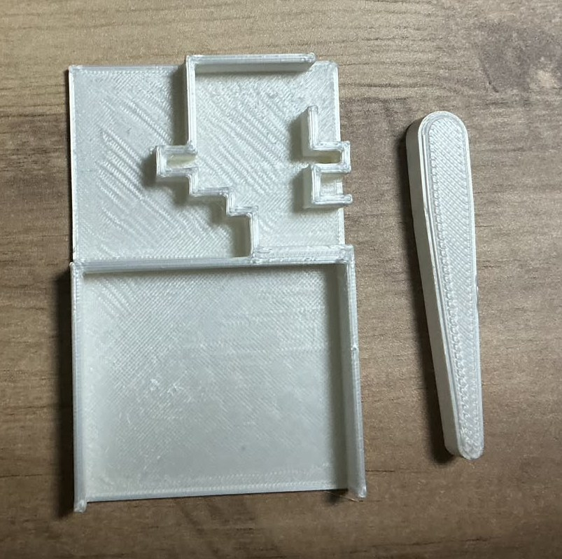
Parking gate arm & mount
Fusion 360 / FDM
Pivoting barrier arm and a breadboard carrier. Reworked twice after measuring how far the
printed dimensions fell from nominal, then adjusted clearances to suit.
Notes / tolerance fit · printed in PLA
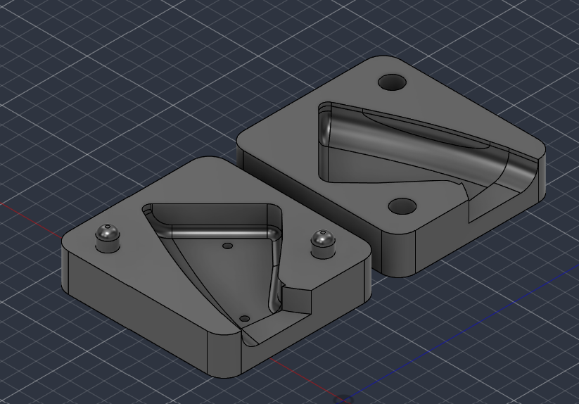
Claw grip-tip mold
Fusion 360 / tooling
Two-part split mold with locating pins, a pour channel, and drafted walls so the cast tip
releases cleanly. Built to solve a grip problem on the competition robot above.
Geared jaw pair on a servo mount, sized around the game element so the opening clears it
without disturbing neighbouring pieces. Revised after the grip fix started breaking servos.
Notes / printed jaws | geared linkage
Skills
Listed at the level I can defend in an interview.
Hardware design
PCB design — KiCad, schematic to routed layout
Circuit analysis — RC / RLC, DC networks
Soldering — through-hole and SMD rework
Prototyping — breadboard to protoboard
Firmware & software
C / C++ — ESP-IDF, Arduino
Python
MATLAB / Simulink
MQL5
Git — branching, remotes, Pages
CAD & fabrication
Fusion 360 — parametric modelling
3D printing — FDM, slicing, tolerance tuning
Hardware repair — board-level diagnosis
Instruments & systems
Oscilloscope, multimeter, bench supply
CodeSys — ladder logic (learning)
Linux / bash
ESP32 peripherals — GPIO, UART, I²C, ESP-NOW
Experience
Paid work and the competition roles where I led a team.
Jul 2026 — present
Technology Support
University of Texas at El Paso
Diagnosed and repaired OS-level failures on 110+ laptops under departmental turnaround deadlines.
● Root-caused BIOS and system-level faults on 80+ units, isolating hardware vs. firmware failure points before applying targeted fixes rather than blanket reimaging.
Disassembled and reassembled 100+ systems for component-level repair and parts recovery.
Aug 2021 — Jun 2025
Coach and 3D Designer
FIRST Tech Challenge Robotics
Competed in 20+ matches across multiple seasons, advancing to state and premier levels.
Coached a 15-person team and designed 10+ 3D-printed prototype robots.
Raised $5,000+ per season in sponsorship.
Jan 2024 — Apr 2025
Chief Engineer and 3D Designer
UAH InSPIRESS
Led two competition engineering teams, qualifying for the Alabama competition.
Presented a prototype simulation to NASA judges. Won first place in Outreach.
Jun 2024 — Aug 2025
Math Tutor
DaVinci School for Science and the Arts
Adapted explanations to each student's level across a range of ability. Helped
110+ students passed their STAAR exams.
Education
2025 — 2029 (expected)
B.S. Electrical Engineering
University of Texas at El Paso
GPA 3.76 / 4.00.
Ongoing
Self-directed engineering study
Independent
MATLAB/Simulink coursework, RC and RLC circuit analysis, and IEC 61131-3 ladder logic
in CodeSys. Worked through alongside my degree to get to applied hardware sooner.
Involvement
Member
AESS — Aerospace and Electronic Systems Society, UTEP
Technical workshops in soldering and PCB design.
Member
IEEE UTEP Student Branch
Technical and networking events.
Member
SHPE / MAES, UTEP
Technical workshops and professional development events.
Contact
Open to hardware, PCB, and embedded internships, and happy to talk through any of the
projects above in detail.